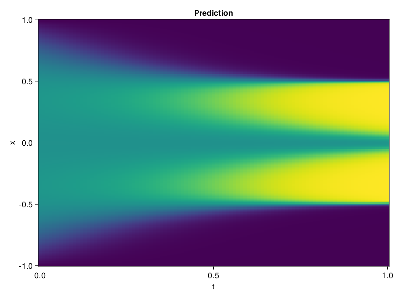

Allen-Cahn Equation with Sequential Training
In this tutorial we are going to solve the Allen-Cahn equation with periodic boundary condition from $t=0$ to $t=1$. The traning process is split into four stages, namely $t\in [0,0.25]$, $t\in [0.0,0.5]$, $t\in [0.0,0.75]$ and $t\in [0.0, 1.0]$.
using ModelingToolkit, IntervalSets
using Sophon
using Optimization, OptimizationOptimJL
@parameters t, x
@variables u(..)
Dₓ = Differential(x)
Dₓ² = Differential(x)^2
Dₜ = Differential(t)
eq = Dₜ(u(x, t)) - 0.0001 * Dₓ²(u(x, t)) + 5 * u(x,t) * (abs2(u(x,t)) - 1.0) ~ 0.0
domain = [x ∈ -1.0..1.0, t ∈ 0.0..0.25]
bcs = [u(x,0) ~ x^2 * cospi(x),
u(-1,t) ~ u(1,t)]
@named allen = PDESystem(eq, bcs, domain, [x, t], [u(x, t)])\[ \begin{align} - 0.0001 \frac{\mathrm{d}}{\mathrm{d}x} \frac{\mathrm{d}}{\mathrm{d}x} u\left( x, t \right) + 5 \left( -1 + \left|u\left( x, t \right)\right|^{2} \right) u\left( x, t \right) + \frac{\mathrm{d}}{\mathrm{d}t} u\left( x, t \right) =& 0 \end{align} \]
Then we define the neural net, the sampler, and the training strategy.
chain = FullyConnected(2, 1, tanh; hidden_dims=16, num_layers=4)
pinn = PINN(chain)
sampler = QuasiRandomSampler(500, (300, 100))
strategy = NonAdaptiveTraining(1, (50, 1))
prob = Sophon.discretize(allen, pinn, sampler, strategy)OptimizationProblem. In-place: true
u0: ComponentVector{Float64}(layer_1 = (weight = [-0.5825791358947754 0.036580540239810944; -0.3865528702735901 -1.148730754852295; … ; 0.6511647701263428 -1.3897221088409424; 1.5003201961517334 -0.0009657963528297842], bias = [0.0; 0.0; … ; 0.0; 0.0;;]), layer_2 = (weight = [-0.44421663880348206 -0.6043263673782349 … 0.12945011258125305 -0.5282162427902222; 0.2210330367088318 0.38433757424354553 … -0.36682483553886414 0.48969247937202454; … ; 0.3123182952404022 -0.5868037343025208 … 0.3421280086040497 -0.40449896454811096; -0.2323814183473587 0.4854907691478729 … -0.13960592448711395 0.6507726311683655], bias = [0.0; 0.0; … ; 0.0; 0.0;;]), layer_3 = (weight = [-0.4159708023071289 0.011142420582473278 … 0.11220450699329376 0.24520352482795715; -0.6459277868270874 -0.01529767457395792 … -0.6155351996421814 0.25300920009613037; … ; 0.209732323884964 -0.27343541383743286 … -0.7191251516342163 -0.32119953632354736; -0.1839628517627716 0.588690996170044 … -0.00733404653146863 0.07299882918596268], bias = [0.0; 0.0; … ; 0.0; 0.0;;]), layer_4 = (weight = [0.3646782636642456 0.5517615675926208 … 0.0028403429314494133 -0.42072466015815735; -0.3643808364868164 0.17974436283111572 … 0.2543133497238159 -0.527402937412262; … ; -0.7028893232345581 -0.34049665927886963 … -0.5889362692832947 0.06084975227713585; 0.5071706175804138 -0.3342825770378113 … -0.19490911066532135 0.5682387351989746], bias = [0.0; 0.0; … ; 0.0; 0.0;;]), layer_5 = (weight = [-0.17555701732635498 0.6246091723442078 … -0.3865654468536377 -0.3660137355327606], bias = [0.0;;]))We solve the equation sequentially in time.
function train(allen, prob, sampler, strategy)
bfgs = BFGS()
res = Optimization.solve(prob, bfgs; maxiters=2000)
for tmax in [0.5, 0.75, 1.0]
allen.domain[2] = t ∈ 0.0..tmax
data = Sophon.sample(allen, sampler)
prob = remake(prob; u0=res.u, p=data)
res = Optimization.solve(prob, bfgs; maxiters=2000)
end
return res
end
res = train(allen, prob, sampler, strategy)u: ComponentVector{Float64}(layer_1 = (weight = [-0.7284636497439972 0.40329803725060853; -0.08043303501827809 -1.374700283425344; … ; 0.14903987994760926 -0.9883900135203614; 2.2460365718145647 0.05080014900457686], bias = [-0.21587026441172058; 1.5855204718832618; … ; -0.7888138090566574; 0.9188169627154034;;]), layer_2 = (weight = [-0.666507880573718 -0.5419062844108324 … 0.29643460897761637 -0.5441659336930883; 0.6752309730040628 -0.04083056712935427 … -1.1041582157820993 0.7644141279587661; … ; 0.3758393835939205 -0.9708301610203185 … 0.4815581040438391 -0.5080937349475657; -0.3320585232731185 1.012718828456758 … -0.3560091197239182 0.7051444619958932], bias = [0.08780436192812031; 0.17473000837321562; … ; -0.5426882824502758; 0.4988647629621606;;]), layer_3 = (weight = [-0.21562712497339365 -0.41780358857030553 … -0.09835969551429227 0.5310107726672301; -0.6664907690928701 0.032158558272981946 … -0.8905093488428529 0.11046687751566588; … ; -0.005345779468553 0.1480512374803987 … -0.4848796028325542 -0.4289608396114578; -1.6266568435110678 0.8707206179984928 … -0.09415082169317211 0.2387168462166638], bias = [-0.2997947958737789; 0.007617906961284201; … ; 0.34121939754540753; 0.12486372486476452;;]), layer_4 = (weight = [0.3393838025367084 0.5477247210683076 … -0.2343859357008188 -0.7587587529189075; -0.3253686317437294 0.8331722810261075 … -0.1260814497728571 -0.5513682138155878; … ; -0.5332814845130069 0.34066567048890384 … -0.22137766363440756 -0.06267598727090098; 0.3661086411622506 -0.6968532030285431 … -0.1708754801038386 1.2695907686542476], bias = [0.14334836090945058; -0.08530665583180047; … ; 0.11458141288602941; 0.290764931067683;;]), layer_5 = (weight = [-0.39974390423446093 0.9811447478140897 … -0.39787115054810424 -0.24750947393434883], bias = [-0.6931842459227046;;]))Let's plot the result.
using CairoMakie
phi = pinn.phi
xs, ts = [infimum(d.domain):0.01:supremum(d.domain) for d in allen.domain]
axis = (xlabel="t", ylabel="x", title="Prediction")
u_pred = [sum(pinn.phi([x, t], res.u)) for x in xs, t in ts]
fig, ax, hm = heatmap(ts, xs, u_pred', axis=axis)